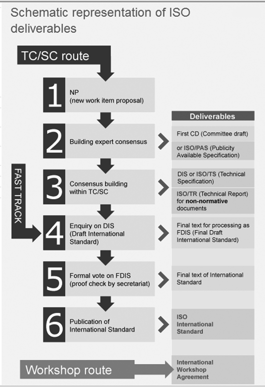

Standards and Standardization
LIS 5043: Organization of Information
Introduction
What is a “Standard”?
- A standard, according to the British Standards Institute, is
“an agreed, repeatable way of doing something. It is a published document that contains a technical specification or other precise criteria designed to be used consistently as a rule, guidance, or definition”
Functions of Standards
ISO - What Standards Do (2009)
- Make the development, manufacturing and supply of products and services
more efficient, safer and cleaner Facilitate tradebetween countries and make itfairerprovide governments with a technical base forhealth, safety and environmental legislation, and conformity assessmentSharetechnological advances and good management practice- Disseminate
innovation Safeguard consumers, and users in general, of products and services- Make life simpler by
providing solutionsto common problems
Why Develop Standards?
Standards can be voluntary or ad hoc and developed for specific purposes or products
Standards are developed and applied within a multitude of different contexts, from manufacturing, information management, and technology, to agriculture and the sciences
Who Develops Standards?
- Official standards organizations
- NISO (National Information Standards Organization)
- ISO (International Standards Organization)
- Industry Consortia
- Unicode Consortium
- WC3 (Worldwide Web Consortium)
- Cooperative Consortia of Universities
- Other Research Organization, or Industrial Organizations or Business Entities
- Microsoft and Adobe
Who: American National Standards Institute (ANSI)
ANSI - Overview of ANSI (2009)
Coordinatesthe U.S. voluntary consensus standards systemAccreditsqualified organizations, whose standards development process meets all of ANSI’s requirements, to develop American National StandardsRepresentsU.S. interests in regional and international standardization activities while overseeing conformity assessment activities that promote the global acceptance of U.S. products, services, systems and personnel
Who: National Information Standards Organization (NISO)
Non-profit association accredited by the American National Standards Institute which “identifies, develops, maintains, and publishes technical standards to manage information in our changing and ever-more digital environment”
NISO standards apply both traditional and new technologies to the full range of information-related needs, including retrieval, re-purposing, storage, metadata, and preservation
NISO’s Mission Statement emphasizes their commitment to standards development
“NISO fosters the development and maintenance of standards that facilitate the creation, persistent management, and effective interchange of information so that it can be trusted for use in research and learning”
NISO’s voting members include industry leaders of over 70 organizations in the fields of publishing, libraries, IT, and media, as well as experts and practitioners who serve on NISO working groups, committees, and as officers of the association
Who: International Standards Organization (ISO)
- World’s largest developer and publisher of international standards
- Founded in 1947
- ISO has published more than 21,840 International Standards, ranging from standards for activities such as agriculture, construction, and mechanical engineering, to medical devices, to the newest information technology developments
ISO (Cont.)
“a non-governmental organization comprised of a network of national standards institutes from 162 countries, as well as members from both private sector entities, such as national partnerships of industry associations, and member institutes that are part of the governmental structure of their countries, or are mandated by their government” (ISO, About ISO, 2020)
ISO collaborates with international and regional partners
International partnersinclude, the International Electrotechnical Commission (IEC), the International Telecommunication Union (ITU), the World Trade Organization (WTO), or the United Nations (UN) OrganizationISO's technical committeeshave formal liaison relations with over 600 international and regional organizationsISO's regional partnersinclude for example, the African Regional Organization for Standardization (ARSO), the European Committee for Standardization (CEN), and the Pan American Standards Commission (COPANT)
How are Standards Developed?
Standards are developed by a
community of expertsfrom relevant industrial, technical, or business sectorsRepresentatives from
government agencies, consumer associations, non-governmental organizations and academicscan also be members of the technical committees that develop, review, and maintain standardsStandards are first proposed by leaders from these stakeholder groups when a need is found for either a new standard or to revise an existing one.
Stakeholders propose their requirement to the national or international standards organization members, who in turn communicate this need to the appropriate technical committee working in the area of the needed standard.
How are Standards Developed?
Information Technology Standards
can range from
network protocols, toformatting, tocontent standardscan be of a
technical nature, dealing with encoding standards within specific technical standards (such as bibliographic databases like MARC)can be concerned with all aspects of
record creation- metadata schema (field structures)
- technical infrastructure
- content entry rules
standard can be
dependent upon other related standards- technical standards for the encoding of data within XML or other data language.
Technical Standards
MARC and MARC 21- Information exchange standard
- First MARC standard developed in 1960’s by U.S. and U.K.
- MARC21 developed in 2000, merger of USMARC and CANMARC
- based on the ANSI NISO standard Z39.2, the American National Standard for Bibliographic Information Exchange (1971, revised 1985) and the ISO standard 2709:1996, Information Documentation–Format for Information Exchange
- LC’s Network Development and MARC Standards Office and Standards Division at the Library and Archives Canada
Technical Standards
- MARC-based metadata schema
MODs(Metadata Object Description Schema), an XML metadata schema which uses selected data from MARC records and extends the records to include additional data elements;MADS(Metadata Authority Description Schema), an XML schema for authorities data;XMLMARC, which translates the MARC record structure into an XML schema;- numerous
metadata crosswalksbetween MARC and other metadata standards
- Revisions to MARC due to RDA work
Technical Standards
UNIMARC- developed in 1977 and has been revised as needed through the years
- most current version of UNIMARC includes updates through 2005
- maintained by the International Federation of Library Associations (IFLA) Universal Bibliographic Control and International MARC Core Programme (UBCIM) (IFLA, 2008)
- information exchange among national bibliographic agencies
Other Technical Standards
ISO standard 1001:1996, Information Processing:
File StructureandLabeling of Magnetic Tapesfor Information InterchangeSGML(Standard Generalized Markup Language), ISO standard 8879: 1986, Information Processing–Text and Office Systems, which defines the entities (objects) and attributes (general characteristics) of the data structure used to encode data about a collection’s objectsHTML(HyperText Markup Language), a SGML application designed for the creation of webpagesXML(Extensible Markup Language), ISO standard 8879, which implements SGML in the web environmentUniversal Coded Character Set(UCS or ISO/IEC 10646: 1998) approved as a second encoding for MARC 21 recordsUnicode, ISO/IEC standard 10646, Universal Multiple-Octet Coded Character Set, defines a universal character set for encoding the characters in the scripts of the world’s languages
Content Creation Standards
International Standard Bibliographic Description (ISBD)serves as an international standard that defines a set of descriptive elements to include in bibliographic records
There are ten specialized ISBDs related to:
- ISBD(A), older monographic publications
- ISBD(CF) computer files
- ISBD(CM) cartographic materials
- ISBD(CR) serials and continuing resources
- ISBD(ER) electronic resources
- ISBD(G) general
- ISBD(M) monographic
- ISBD(NBM) nonbook materials
- ISBD(PM) printed music
- ISBD(S) serials
IFLA began work on the consolidated the ISBDs into one in 2003, with publication in the consolidated ISBD in 2007
Content Creation Standards
Resource Description and Access (RDA)began work in 2003
the online tool for accessing the RDA was released in June 2010; RDA was implemented in national libraries (Library of Congress, NAL, NLM) in first quarter of 2013
The RDA is based on the conceptual metadata models, FRBR (Functional Requirements for Bibliographic Records) and FRAD (Functional Requirements for Authority Data), developed by IFLA and the international cataloging community
Will replace the AACR2 as content creation standard when adopted/implemented
Subject-Related Content Standards
- Controlled vocabulary development—thesauri
ISO 2788: 1986, Documentation -- Guidelines for the establishment and development of monolingual thesauri- was first published as an ISO standard in 1974. It was revised in 1986. In 2017 it was combined with 5964 and others as ISO 25964.
ISO 5964: 1985, Documentation -- Guidelines for the establishment and development of multilingual thesauri- Work was just completed in 2017 to revise and combine ISO 2788 and ISO 5964 into an updated ISO 25964, Information and documentation – Thesauri and interoperability with other vocabularies. An international group of experts in indexing representing 11 countries is currently reviewing 2788 and 5964 and aligning them with the new BS version.
Subject-Related Content Standards
BS 8723: 2008, Structured Vocabularies for Information Retrieval- developed by the British Standards Institute, represents a combination and complete revision of BS 5723 and 6723. BS 8723 is being used as the basis for the development of ISO 25964
ANSI/NISO Z39.19: 2005, Guidelines for the Construction, Format and Management of Monolingual Controlled Vocabularies- presents guidelines and conventions for the contents, display, construction, testing, maintenance, and management of monolingual controlled vocabularies. It focuses on controlled vocabularies that are used for the representation of content objects in knowledge organization systems including lists, synonym rings, taxonomies, and thesauri
Subject Related Content Standards
Library of Congress Subject Headings (LCSH)
Sears List of Subject Headings
Library of Congress Classification (LCC)
Dewey Decimal Classification (DDC)
Bliss Classification (B2C)
Uniform Decimal Classification (UDC)
LCSH and LCC (and others) were originally developed by members of either national/international cataloging communities
World Wide Web Content Standards
Resource Description Framework (RDF)- a language for representing information about resources in the World Wide Web…. RDF provides a common framework for expressing this information, so it can be exchanged between applications without loss of meaning
SKOS (Simple Knowledge Organization)- to support the use of knowledge organization systems (KOS) such as thesauri, classification schemes, subject heading systems and taxonomies within the framework of the Semantic Web
- SKOS provides a standard way to represent knowledge organization systems using the Resource Description Framework (RDF)
Metadata Schemes
- Many developed since mid to late 1990’s
- Developed for multiple purposes/environments/collections
- general purpose
- cultural objects and visual resources
- educational purposes–discipline specific or - general application
- LOM
- Darwin Core
- archival and preservation metadata
- metadata registries
Issues Related to Standards
a standard may be in conflict with other standards
the standardized practice may be contrary to how the user would represent and/or search for the information object being described in the knowledge system
the reasons or principles underlying the standard and the community may become obscured. Is the rationale for the standard lost in the development process and the practice? Are all standards necessary or do they continue to be needed?
over standardization may inhibit change
standards should be dynamic and reviewed periodically to make sure they still work as projected, or if revisions are needed